Lista 5 - Equações Diferenciais Parciais
Essas são possíveis soluções.
Exercícios Teóricos
Nesse parte, exponho os exercícios propostos para serem realizados de forma teórica.
 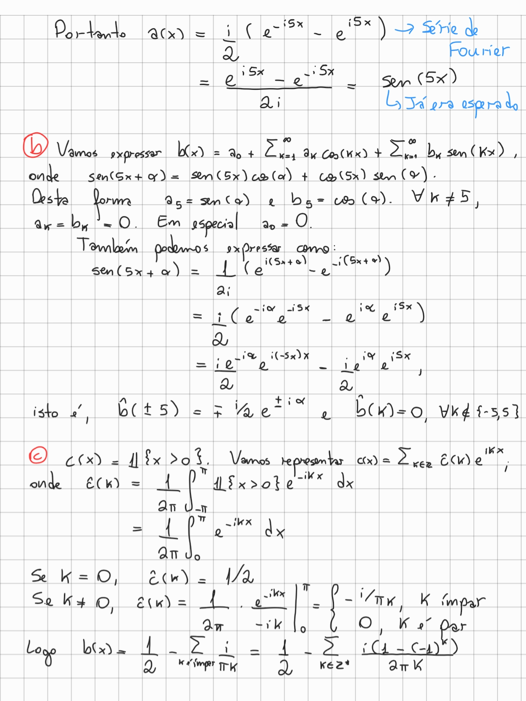
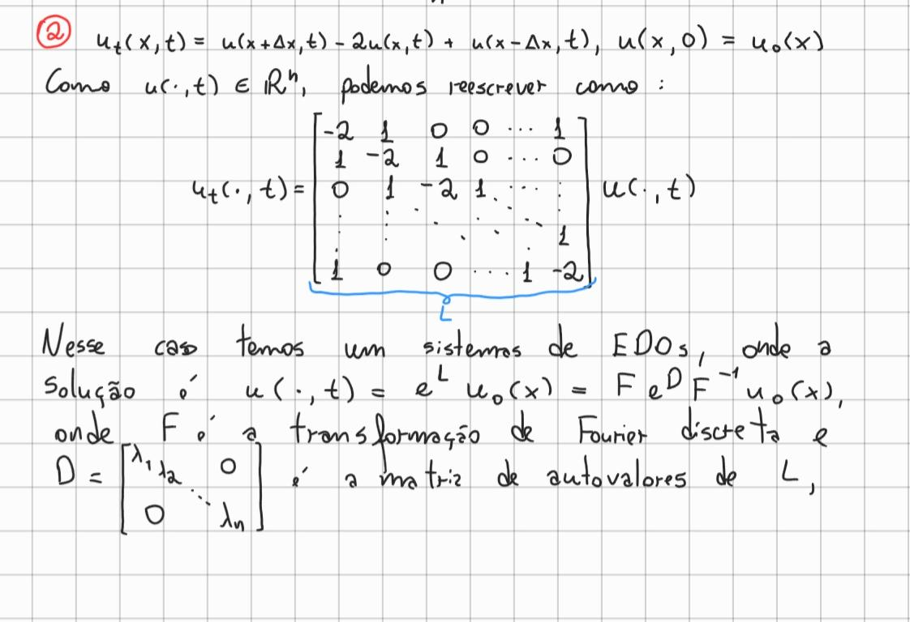
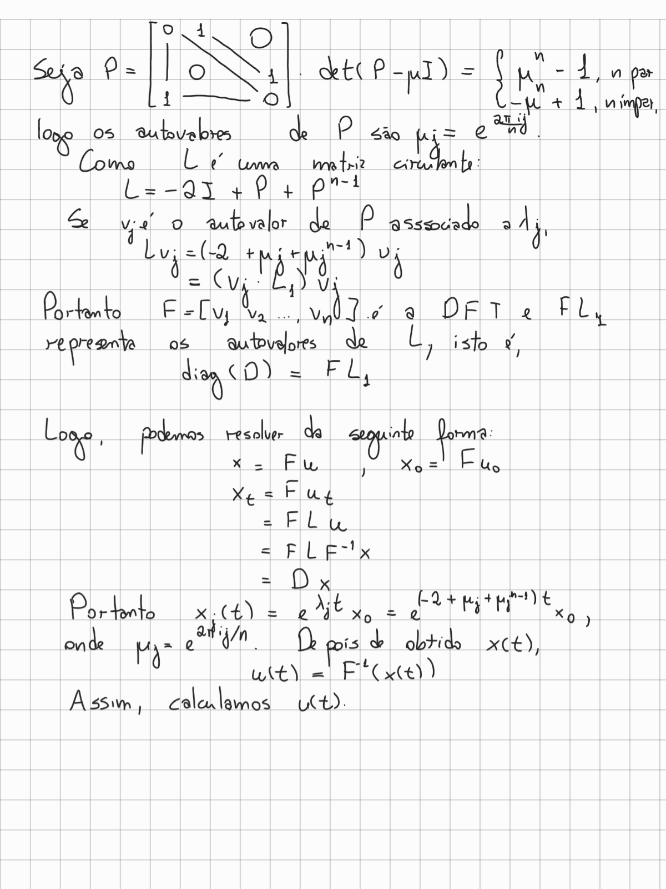
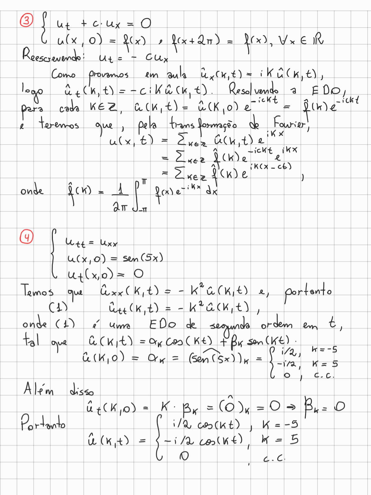
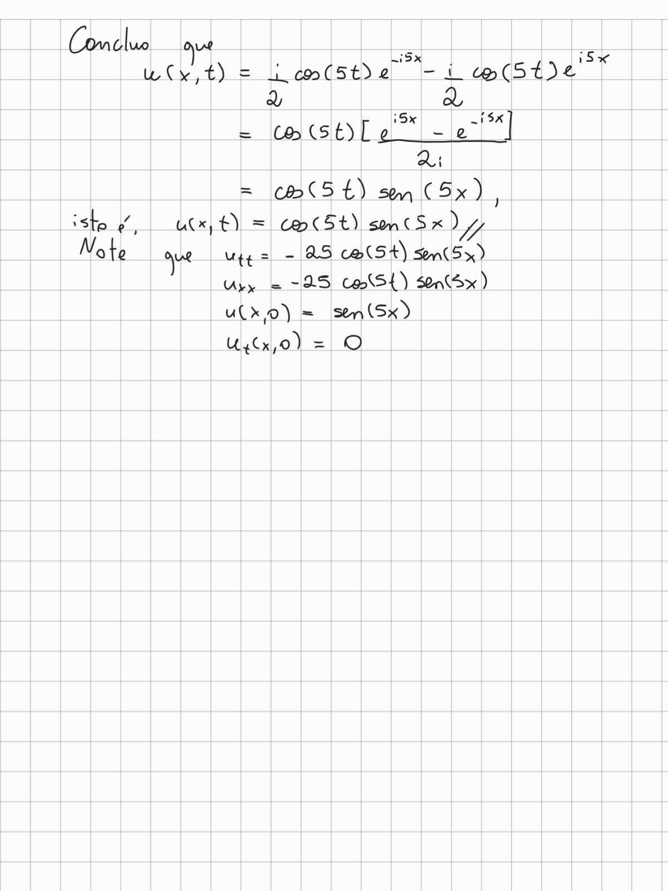
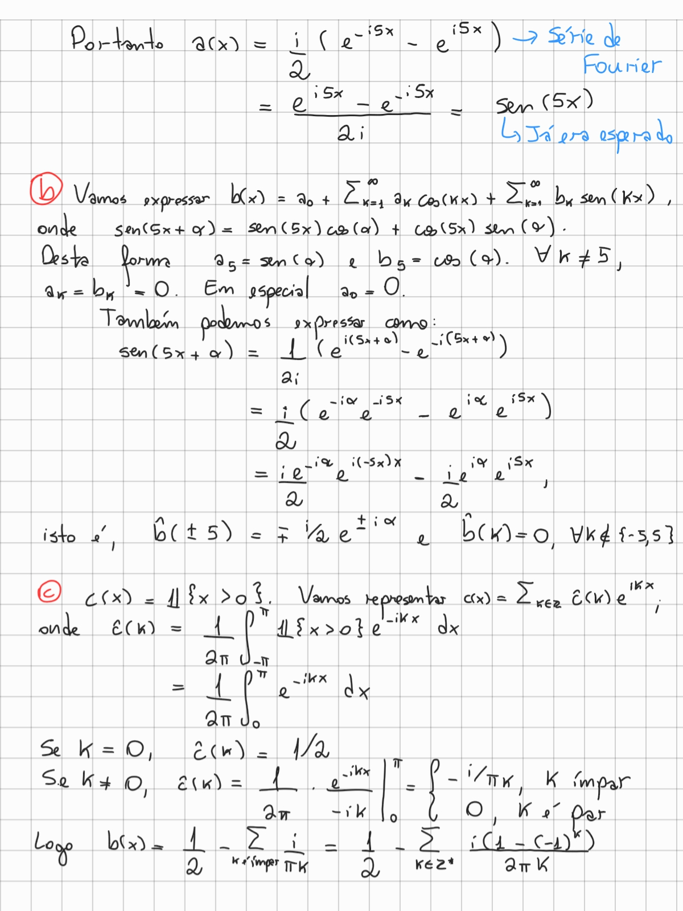
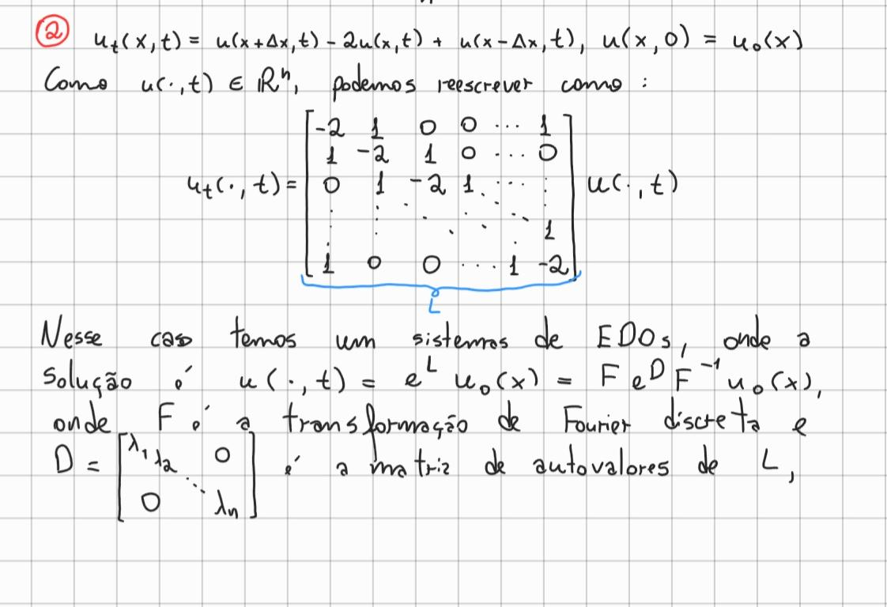
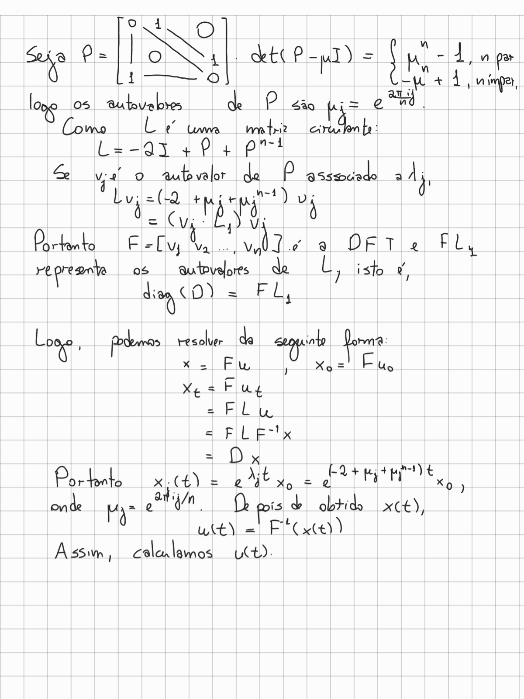
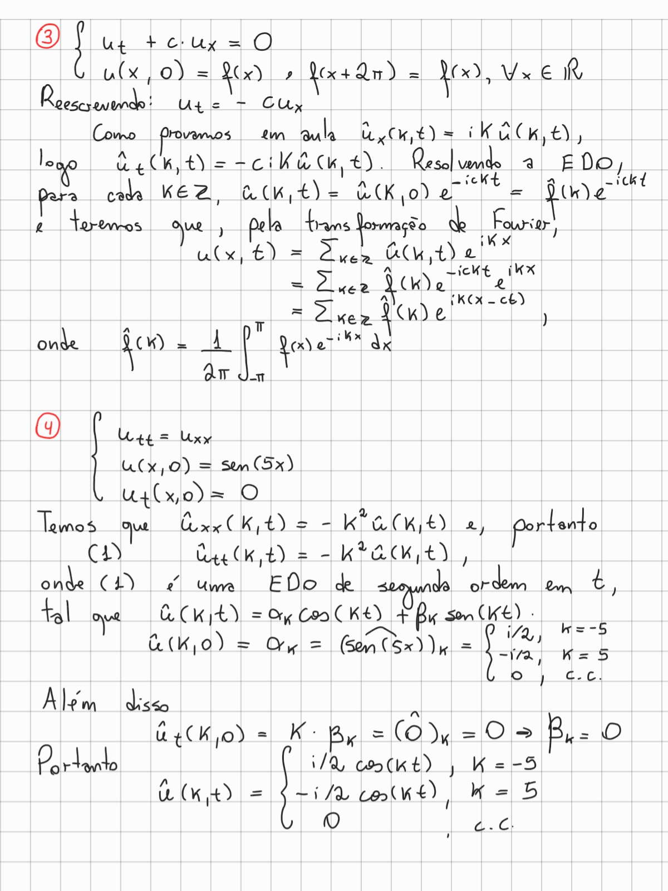
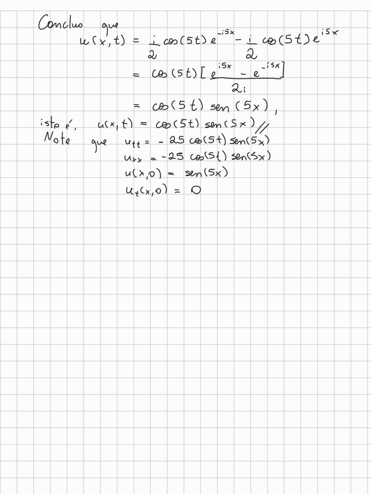
Exercícios Computacionais
Afinador
Nessa seção, apresentados um simples afinador construído com Matlab. O princípio é bem básico: Faço a transformação do espaço temporal para o espaço das frequências utilizando a transformada de Fourier FFT. Depois, observamos que teremos a frequência dominante e seus harmônicos, dado o comportamento da onda. Por esse motivo, precisamos de uma técnica para, dentre os harmônicos, ver qual de fato é o dominante.
A técnica utilizada é o HPS (Harmonic Product Spectrum). Ele se utiliza do fato de um harmônico ter frequência múltipla daa frequência dominante. A técnica funciona rapidamente, o que é interessante. Não há nenhuma outra filtragem, portanto, em um local muito ruidoso, talvez não funcione o afinador.
A entrada é uma string com o nome do arquivo .wav e a saída é a nota com
frequência mais aproximada entre C, C#, D, D#, E, F, F#, G, G#, A, A#, B.
note = afinador('CordaViolao.wav');
disp('A nota tocada foi: ')
disp(note)
function [note] = hps(yhat, n, N)
% Esta função tem o objetivo de calcular o espectro produto harmônico
% A partir de uma yhat na frequência e de um número N de harmônicos
% calcula média geométrica.
% Queremos reconhecer os harmônicos do tom principal.
note = ones(n,1);
bins = 1:n;
for i = 1:N
bins_temp = bins*i;
xhat = ones(n,1);
mask = bins_temp <= n;
xhat(mask) = yhat(bins_temp(mask));
note = note.*abs(xhat);
end
note = (note).^(1/N);
end
function [strnote] = get_note(frequency)
notes = char({'C','C#','D','D#','E','F','F#','G','G#','A','A#','B'});
freqs = [523, 554,587, 622,659,698, 740,784, 831,880, 932, 988];
% Se a frequência não está na oitava, o coloco multiplicando e dividindo
% por 2. Sabemos que a nota será a mesma, em uma diferente frequência.
while frequency <= 508
frequency = frequency*2;
end
while frequency > 988 + 19
frequency = frequency/2;
end
[~, argmin] = min(abs(freqs - frequency));
strnote = notes(argmin,:);
strnote = strnote(~isspace(strnote));
end
function [note] = afinador(name)
[y,Fs] = audioread(name);
n = length(y);
% transform the time scale to frequency scale
yhat = fft(y);
yhat = abs(yhat);
freq = (1:n)*Fs/n;
% use the function harmonic product spectrum
yhat = hps(yhat, n, 5);
% get the dominant tone
[~, argmax] = max(yhat);
note = freq(argmax);
note = get_note(note);
end
O Polvo
Nesse exercício, primeiro temos o polvo, representado pelos vetores e
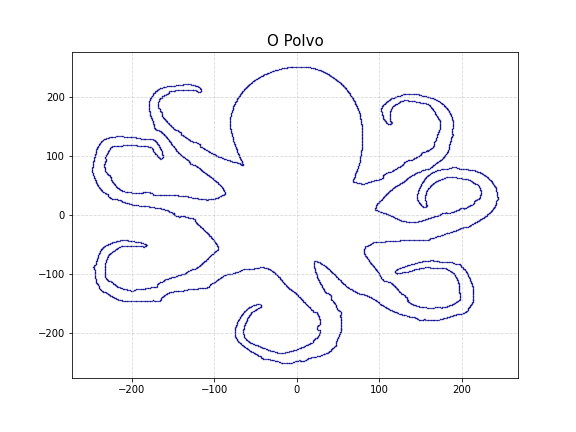
Na letra b somos indagados a produzir sequências e que sejam versões suavizadas das sequências. Para isso, é sugerido utilizar a solução da equação do calor.
Sabemos que é uma matrix circulante e se descrevermos como uma matriz de permutação que coloca a primeira coordenada de um vetor na -ésima posição, teremos que:
E se é autovalor de , será também de , pois:
Além disso, sabemos que autovetores de uma matriz circulante formam a base de Fourier, e, além disso, os autovalores dessa matriz de permutação são aqueles que resolvem a equação . E portanto, . Isto é, podemos obter os autovalores da matriz fazendo a transformação de Fourier na primeira linha de ! (Sei que estava no lembrete já, mas quis conferir as contas).
Aqui segue o código que gera uma sequência de 10 iterações do Polvo. Eu faço um pré-cálculo da matriz diagonal do sistema como mencionado acima e, se é a matriz da transformada de Fourier:
Aqui vemos o polvo com e .
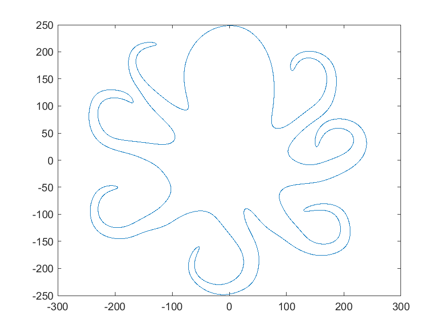
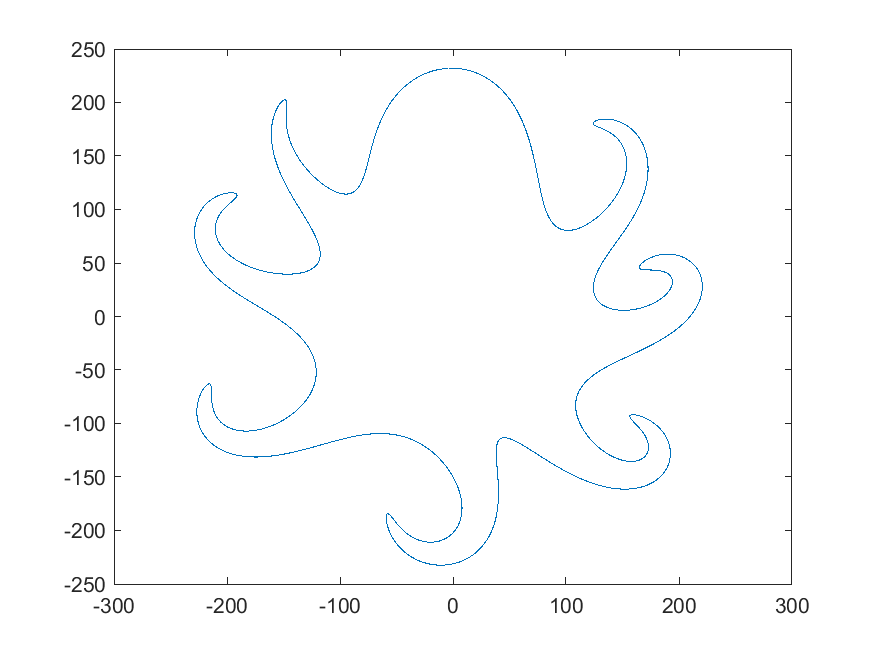
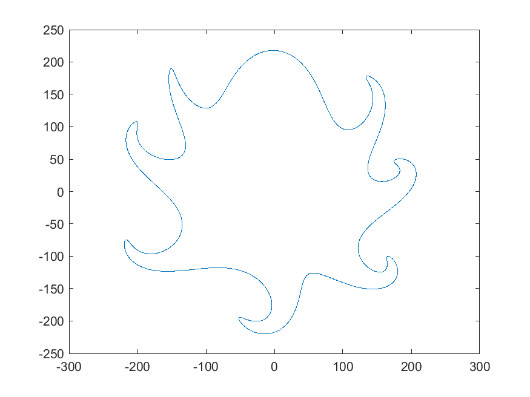

Como conclusão, conseguimos sequências e que sejam versões suavizadas de e .
polvo = csvread('Polvo.csv');
c = 0.5;
[D,x0,y0] = pre_calculation(polvo(:,1), polvo(:,2), c);
figure
plot(polvo(:,1), polvo(:,2),'r.')
xlim([min(polvo(:,1)), max(polvo(:,1))]);
ylim([min(polvo(:,2)), max(polvo(:,2))]);
title('O Polvo de EDP')
xlabel('x')
ylabel('y')
pause(2)
for t = 1:250:15000
x = heat_filter(x0, t, D);
y = heat_filter(y0, t, D);
plot(x,y)
disp(t)
pause(0.1)
if ismember(t, [501, 10001, 14501])
saveas(gcf, join(["Polvo-", t, ".png"], ''));
end
end
clear D;
clear x;
clear y;
clear x0;
clear y0;
function [D, x0, y0] = pre_calculation(x, y, c)
% Calculate the diagonal matrix of convolucional matrix of size n
n = length(x);
D = fft(c*[-2,1,zeros(1,n-3),1]');
x0 = ifft(x);
y0 = ifft(y);
end
function [filter] = heat_filter(u0, t, D)
% This function get a vector, make a convolucional filter (gaussian),
% that is equivalent to the solution of heat equation and return, for
% each t, the x(t) smoothed.
filter = exp(D*t).*u0;
filter = real(fft(filter));
end